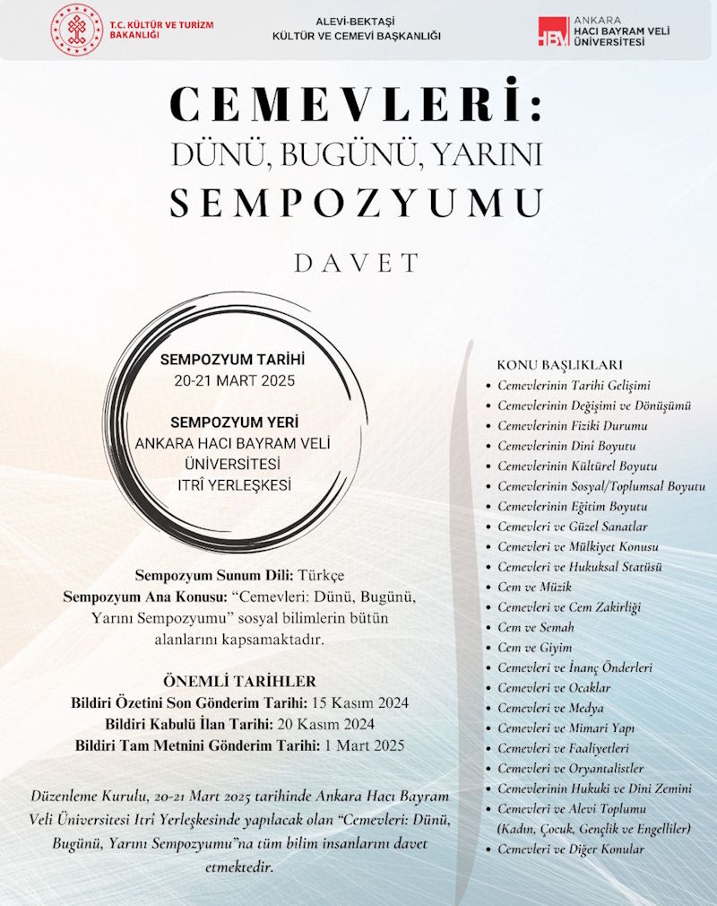
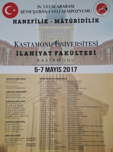
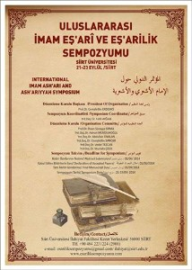
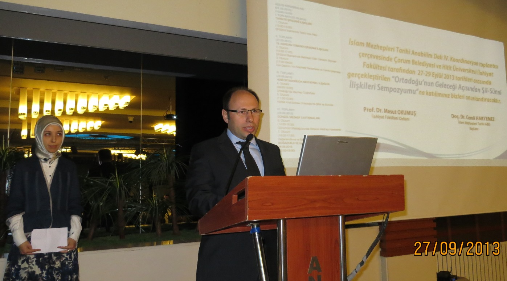
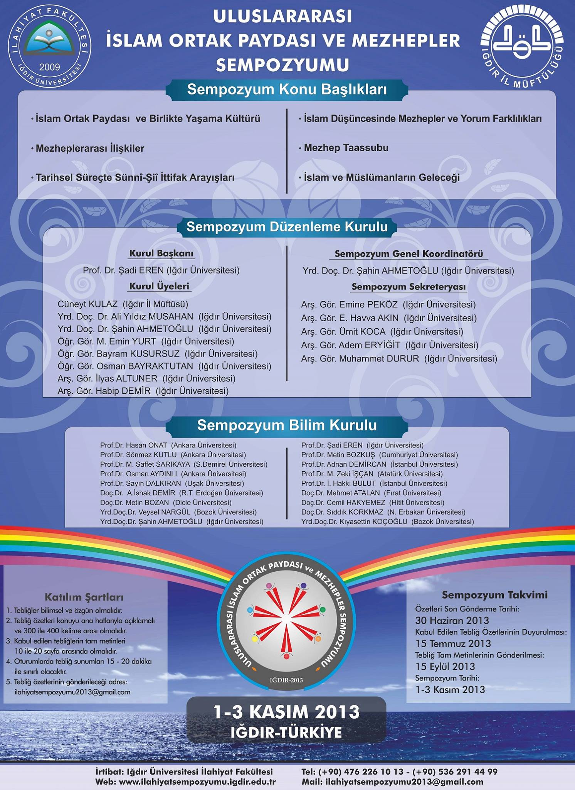
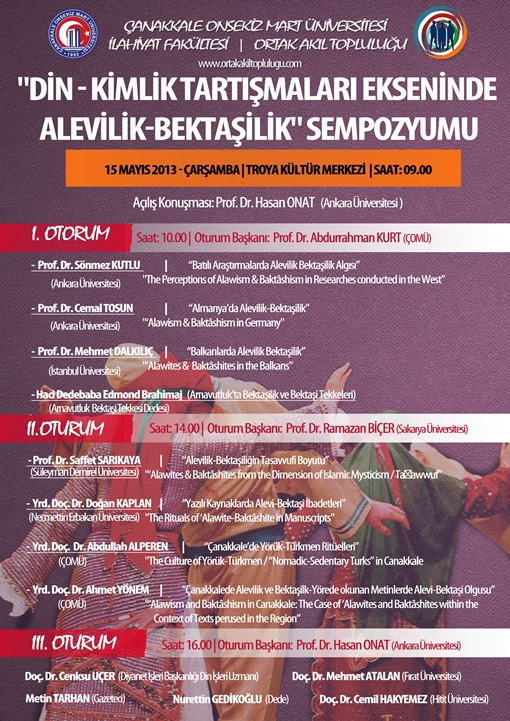
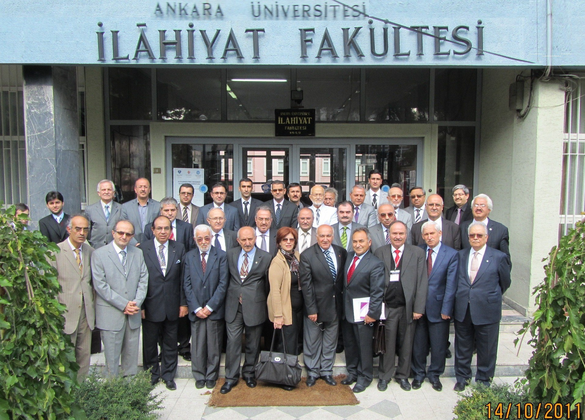
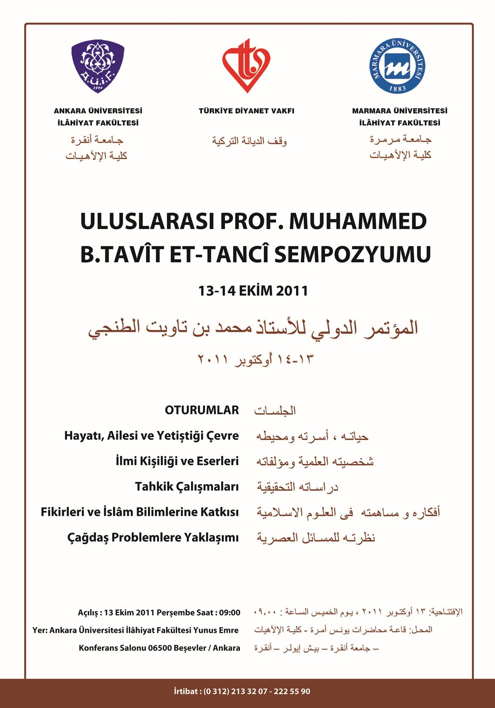
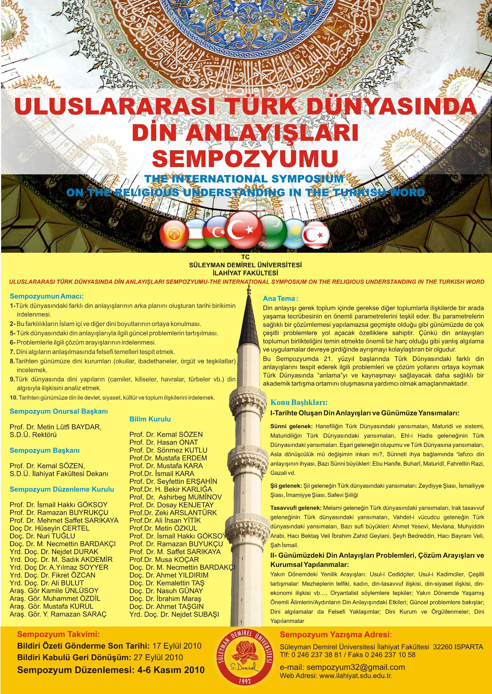
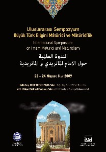

Sempozyumlar
Ulusal ve uluslararası sempozyum, kongre ve bilimsel toplantı duyuruları.
30 kayıt

Cemevleri: Dünü, Bugünü, Yarını Sempozyumu
08- 09 Nisan 2025 tarihinde Ankara’da düzenlenecek olan “Cemevleri: Dünü, Bugünü, Yarını Sempozyumu”nda sosyal bilimlerin tüm bilim alanlarına açık bir şekilde konunun bütün boyutları ile ele alınması amaçlanmaktadır. Sempozyum T.C. Kültür ve Turizm Bakanlığı
Uluslararası İmam Matüridi ve Tevilat Sempozyumu
Uluslararası İmam Matüridi ve Tevilatu’l-Kur’an Sempozyumu (2-3 Kasım 2018) Programı belli oldu. Geniş bilgi ve program için : http://www.imammaturidi2018.com
2018 Eş'arilik Sempozyumu Kastamonu
Kastamonu Üniversitesi İlahiyat Fakültesi 04-06 Mayıs 2018 tarihinde Kastamonu’da V. Uluslararası Şeyh Şa’bân-ı Velî Sempozyumu’nu “EŞ’ARİLİK” başlığı altında düzenleyecektir. MUHTEMEL KONU BAŞLIKLARI Eşariliğin Tarihi ve Düşünce Arkaplanı Eşariliğin Oluşum ve
Uluslararası Mehdilik Sempozyumu 2017
Cumhuriyet Üniversitesi İlahiyat Fakültesi Uluslararası Mehdilik Sempozyumu 29-30 Eylül 2017, SİVAS Özet İçin Son Tarih: 10 Nisan 2017 Sempozyum sitesi: http://mehdiliksempozyumu.cumhuriyet.edu.tr/

Hanefilik-Matüridilik Sempozyumu Kastamonu
IV. ULUSLARARASI ŞEYH ŞABAN-I VELİ SEMPOZYUMU (HANEFİLİK-MATÜRİDİLİK) 05-07 Mayıs 2017 tarihlerinde Kastamonu'da düzenlenecektir. Kastamonu Üniversitesi Rektörlüğü ve Kastamonu Üniversitesi İlahiyat Fakültesi tarafından düzenlenecek olan sempozyumun ÖNEMLİ TAR
İmam Zeyd b. Ali Sempozyumu Ertelendi
SEMPOZYUM İÇİN SALON TAHSİS EDEN KURUMLA SON ANDA ARAMIZDA ÇIKAN KRİZ DOLAYISIYLA ELİMİZDE OLMAYAN SEBEPLERDEN ÖTÜRÜ "ULUSLARARASI İMAM ZEYD B. ALİ VE İSLAM'DA HİLAFET" KONULU SEMPOZYUMUMUZ ERTELENMİŞ OLUP DAHA SONRAKİ BİR TARİHTE İCRA EDİLECEKTİR. MEYDANA GEL
Uluslararası İmam Zeyd b. Ali Sempozyumu Ertelendi
ULUSLARARASI İMAM ZEYD B. ALİ VE İSLAM’DA HİLAFET SEMPOZYUMU2-4 Eylül 2016 tarihinde yapılması planlanan “Uluslararası İmam Zeyd b. Ali ve İslam’da Hilafet Sempozyumu” teknik nedenlerden ötürü 23-25 Eylül 2016 tarihine ertelenmiştir.23 EYLÜL CUMAAÇILIŞ (Saat 1
İslam Mezhepleri Sempozyumu, Mart 2016
Karamanoğlu Mehmetbey Üniversitesi - İslami İlimler Fakültesi tarafından düzenlenecek olan İslam Mezhepleri Sempozyumu 25-27 Mayıs 2016 tarihinde gerçekleştirilecek. Ayrıntılı bilgi ve tarihler için sempozyum özel sitesi:
Uluslararası Maturidilik Sempozyumu
Değerli Bilimseverler, Ahmet Yesevi Üniversitesi Beşeri Bilimler Fakültesi Dintanu Bölümü 16-18 Nisan 2015 tarihinde Türkistan'da Uluslararası Maturidilik: Dünü, Bugünü ve Geleceği adlı bir Sempozyum düzenleyecektir. Selam ve saygılarımla Prof. Dr. Sönmez KUTL

Uluslararası İmam Eş'ari ve Eş'arilik Semp
Siirt Üniversitesi İlahiyat Fakültesi tarafından 21-23 Eylül 2014 tarihlerinde "Uluslararası İmam Eş'ari ve Eş'arilik" Sempozyumu düzenleniyor. Sempozyuma özel web sitesi www.esariliksempozyumu.com ÖNEMLİ TARİHLER Bildiri Özetleri için Son Tarih: 01 Haziran 20
Alevîlik-Bektaşîlik Güncel Sorunları Sempozyumu
ÇANAKKALE ONSEKİZ MART ÜNİVERSİTESİ İLAHİYAT FAKÜLTESİ, "Uluslararası Alevilik-Bektaşilik Güncel Sorunları" Sempozyumu düzenliyor. 18 Nisan 2014 tarihinde gerçekleştirilecek olan sempozyum Programı için tıklayınız! Sempozyum özel sitesi için tıklayınız! .
Alevi Bektaşi Klasikleri Sempozyumu
Sakarya Üniversitesi İlahiyat Fakültesi ve Fen Edebiyat Fakültesi Tarih Bölümü işbirliği ile 08-09 Kasım 2014 tarihlerinde, "Alevi Bektaşi Klasikleri" üst başlıklı uluslararası sempozyumun düzenlenecektir.Sempozyum özel sitesi: www.alevibektasiklasiklerisempoz

2013 Şiî-Sünnî İlişkileri Sempozyumu
ORTADOĞU'NUN GELECEĞİ AÇISINDAN Şİİ-SÜNNİ İLİŞKİLERİ SEMPOZYUMU (27-29 EYLÜL 2013, ÇORUM) AÇILIŞ VE PROTOKOL KONUŞMALARI Doç. Dr. Cemil HAKYEMEZ Hitit Üniversitesi İlahiyat Fakültesi İslam Mezhepleri Anabilim Dalı Başkanı Prof. Dr. Mesut OKUMUŞ Hitit Üniversit

2013 Şii-Sünni İlişkileri Sempozyumu Programı
ORTADOĞU'NUN GELECEĞİ AÇISINDAN ŞİÎ-SÜNNî İLİŞKİLERİ SEMPOZYUMU 27-29 EYLÜL 2013, ÇORUM AÇILIŞ KONUŞMALARI (27.09.2013) (10:00-12:00) I. TOPLANTI (27.09.2013) TARİHTE ŞİÎ-SÜNNÎ İLİŞKİLERİ 1.Oturum (13:30-15:00):Şiî-Sünnî İlişkilerinin Tarihî Arka Plânı II. TOP

İslam Ortak Paydası Mezhepler Sempozyumu
Uluslararası İslam Ortak Paydası Mezhepler Sempozyumu 1-3 Kasım 2013 tarihlerinde Iğdır'da düzenlenecektir. Özet göndermek için son tarih: 30 Haziran 2013 Sempozyum sitesi için tıklayınız! http://ilahiyatsempozyumu2013.com/

Din-Kimlik, Alevilik-Bektaşilik Sempozyumu
ÇANAKKALE ONSEKİZ MART ÜNİVERSİTESİ İLAHİYAT FAKÜLTESİ ve ORTAK AKIL TOPLULUĞU "DİN-KİMLİK TARTIŞMALARI EKSENİNDE ALEVİLİK-BEKTAŞİLİK" SEMPOZYUMU YER: ÇANAKKALE ONSEKİZ MART ÜNİVERSİTESİ TROYA KÜLTÜR MERKEZİ TARİH :15 MAYIS 2013 ÇARŞAMBA Protokol Konuşmaları:
Uluslararası Alevilik Sempozyumu Tarihler
Bingöl Üniversitesi tarafından düzenlenen ve 3- 5 Ekim 2013 tarihlerinde gerçekleştirilecek olan "Geçmişten Günümüze I. Uluslararası Alevilik Sempozyumu" için özet teslim tarihini hatırlatmak istedim: 31 Mayıs 2013 özet teslimi için son gün! Sempozyumu takip v
Geçmişten Günümüze Alevilik 1. Uluslararası Sempoz
Geçmişten Günümüze Alevilik 1. Uluslararası Sempozyumu ile İlgili Gelişmeler Sempozyumun Açılış Konferansı İçin Demokratik Karar Konuyla ilgili sayfada yer alan duyuru şöyledir: "Sevgili dostlar, Geçmişten Günümüze 1. Alevilik Sempozyumu Açılış Konferansını ve
Uluslararası Alevilik Sempozyumu
"Geçmişten Günümüze I. Uluslararası Alevilik Sempozyumu" Bingöl Üniversitesi 3- 5 EKİM 2013 tarihinde Bingöl Üniversitesi tarafından "Geçmişten Günümüze I. Uluslararası Alevilik Sempozyumu'' yapılacaktır. Bütün muhterem hocalarımıza duyurulur. Alevilik hakkınd

ULUSLARARASI et-TANCÎ SEMPOZYUMU GERÇEKLEŞTİRİLDİ
ULUSLARARASI PROF. MUHAMMED b. TAVÎT et-TANCÎ SEMPOZYUMU, Ankara Üniversitesi İlahiyat Fakültesi ve Marmara Üniversitesi İlahiyat Fakültesi işbirliği ile 13-14 Ekim 2011 tarihlerinde Ankara'da gerçekleştirildi. Çoğunluğu Türkiye'den olmak üzere çeşitli ülkeler

ULUSLARARASI et-TANCİ SEMPOZYUMU PROGRAMI
13-14 Ekim 2011 tarihlerinde Ankara Ün. İlahiyat Fakültesinde gerçekleştirilecek olan ULUSLARARASI PROF. MUHAMMED b. TAVÎT et-TANCÎ SEMPOZYUMU PROGRAMI BELLİ OLDU Ayrıntılı program için tıklayınız!

ULUSLARARASI et-TANCİ SEMPOZYUMU ANKARA
ULUSLAR ARASI PROF. MUHAMMED b. TAVÎT et-TANCÎ SEMPOZYUMU 13-14 Ekim 2011 ANKARA/TÜRKİYE 13-14 Ekim 2011 tarihleri arasında Ankara Üniversitesi İlahiyat Fakültesi ve Marmara Üniversitesi İlahiyat Fakültesi işbirliği ile Uluslar arası Muhammed b. Tavît et-Tancî
Uluslararası İnanç Problemleri Sempozyumu KONYA
Saygıdeğer Hocalarım, Selçuk Üniversitesi İlahiyat Fakültesinin geleneksel sempozyumlarının 6.sı ile ilgili duyuru ektedir. ULUSLARARASI günümüz islam toplumlarında inanç problemleri SEMPOZYUMU06–07 Mayıs 2011Konya Selçuk Üniversitesi İlahiyat Fakültesi gelene
24 Aralık 2010 Ehl-i Beyt Sempozyumu Marmara
Kur'ân-ı Kerîm'in Nüzûlünün 1400. Yılı münasebetiyle Marmara Üniversitesi İlahiyat Fakültesi, Dünya Ehl-i Beyt Vakfı ve İstanbul Ehl-i Beyt İlim Yayma ve Yardımlaşma Derneği tarafından ortaklaşa düzenlenen Uluslararası Kur'an, Sünnet ve İslâm Geleneğinde Ehl-i

Uluslararası Türk Dünyasında Din Anlayışları Sempozyumu
SÜLEYMAN DEMİREL ÜNİVERSİTESİ İLAHİYAT FAKÜLTESİ TARAFINDAN DÜZENLENEN ULUSLARARASI TÜRK DÜNYASINDA DİN ANLAYIŞLARI SEMPOZYUMU, 4-6 Kasım 2010 TARİHLERİNDE GERÇEKLEŞTİRİLECEK. Sempozyum Takvimi ve İletişim bilgileri şöyle: Bildiri Özeti Gönderme Son Tarihi: 17
20 Mayıs 2010 ULUSLARARASI KERBELA SEMPOZYUMU
Cumhuriyet Üniversitesi İlahiyat Fakültesi tarafından düzenlenen ULUSLARARASI KERBELA SEMPOZYUMU 1 Ocak 2010 tarihine kadar başvuru kabul etmektedir. Genel amaç: İslam inanç, kültür, sosyal ve siyasal tarihinde önemli bir hadise olarak yer alan Kerbela hadises
Uluslararası Alevilik ve Bektaşilik Sempozyumu
Fatih Üniversitesi tarafından düzenlenen “Uluslararası Alevilik Bektaşilik Sempozyumu'na Devlet Bakanı Faruk Çelik ve çok sayıda bilim adamı katılacak. Hacı Bektaş Veli'nin doğumunun 800. yılı anısına Fatih Üniversitesi tarafından “Uluslararası Alevilik Bektaş

Büyük Türk Bilgini Mâtürîdî ve Mâtürîdilik Semp.
M. Ü. İlâhiyat Fakültesi Temel İslâm Bilimleri Bölümü ile İslâmî İlimler Araştırma Vakfı (İSAV) tarafından ortaklaşa düzenlenen Büyük Türk Bilgini Mâtürîdî ve Mâtürîdîlik Uluslararası Sempozyumu 22-24 Mayıs 2009 tarihlerinde İstanbulda gerçekleştirildi. Tam bo
Hz. Ali Sempozyumu Fotoğrafları
Hazreti Ali Sempozyumu Dokuz Eylül Üniversitesi İlahiyat Fakültesi tarafından 24-25 Ekim 2007 tarihlerinde İzmir İlahiyat salonlarında gerçekleştirildi. Sempozyumdan seçme fotoğraflar sitemize konulmuştur. Tıklayınız! Fatih Topaloğlu'nun objektifinden fooğrafl
Hz. Ali Sempozyumu Programı Belli Oldu
Dokuz Eylül Üniversitesi İlahiyat Fakültesi tarafından 24-25 Ekim 2007 tarihlerinde İzmir İlahiyat salonlarında gerçekleştirilecek olan Hazreti Ali Sempozyumu programı belli oldu. PDF formatlı program için tıklayınız.